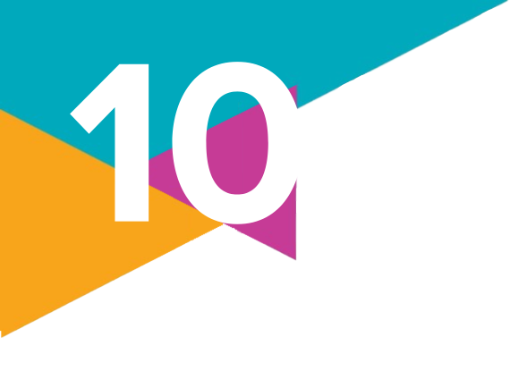
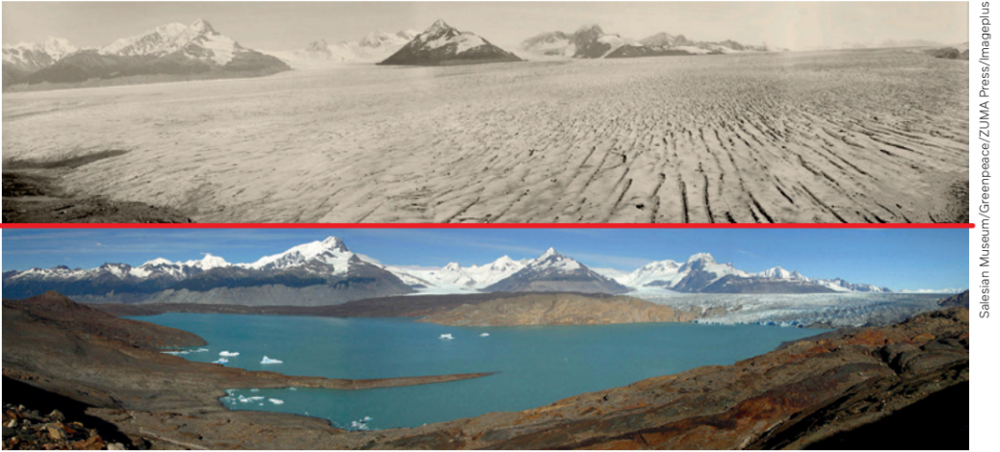

1.
(Enem – 2023)
“O clima está esquentando, os animais estão desaparecendo, os rios estão morrendo e nossas plantações não florescem como no passado. A Terra está falando: ela nos diz que não temos mais tempo.”
O discurso da líder indígena explicita um problema global relacionado ao(à):
a) manejo tradicional.
b) reciclagem residual.
c) consumo consciente.
d) exploração predatória.
e) reaproveitamento energético.
Txai Suruí, liderança da Juventude Indígena, profere seu discurso na abertura da COP-26:
“O clima está esquentando, os animais estão desaparecendo, os rios estão morrendo e nossas plantações não florescem como no passado. A Terra está falando: ela nos diz que não temos mais tempo.”
VICK, M. Quais são as conquistas do movimento indígena na COP-26. Disponível em: www.nexojornal.com.br. Acesso em: 10 nov. 2021 (adaptado).
O discurso da líder indígena explicita um problema global relacionado ao(à):
a) manejo tradicional.
b) reciclagem residual.
c) consumo consciente.
d) exploração predatória.
e) reaproveitamento energético.
2.
Sobre a noção de desenvolvimento sustentável:
a) O que ela significa e como se relaciona com o capitalismo?
b) Quais são as críticas apresentadas pelos autores István Mészáros e David Harvey a essa noção?
a) O que ela significa e como se relaciona com o capitalismo?
b) Quais são as críticas apresentadas pelos autores István Mészáros e David Harvey a essa noção?
3.
Leia o trecho da reportagem e responda ao que se pede.
O Brasil abriga 11.403 comunidades informais, onde aproximadamente 16 milhões de indivíduos residem em cerca de 6,6 milhões de residências, conforme dados preliminares do Censo Demográfico 2022, divulgados pelo Instituto Brasileiro de Geografia e Estatística (IBGE). Este resultado representa um aumento de cerca de 40% na quantidade de brasileiros vivendo nessas condições na última década. O Censo Demográfico de 2010 registrou 11,426 milhões de habitantes em comunidades informais naquele ano. Atualmente, a Sol Nascente, localizada em Brasília, é a comunidade mais populosa do país, com 87.184 residentes, enquanto a Rocinha, no Rio de Janeiro, que liderava o ranking em 2010, agora ocupa o segundo lugar em 2022, com 67.199 moradores.
Os dados mostram o quanto podemos ver da forma sistêmica, mesmo em diferentes lugares do Brasil, que a organização da pobreza se dá sob o mesmo ambiente urbano: as favelas. O conceito de [...], forjado a partir da tese “raça e território”, trouxe à tona a interseção entre discriminação racial, questões territoriais e ambientais.
a) A qual importante conceito da Sociologia Ambiental o texto faz referência?
b) Explique como esse conceito se relaciona com as comunidades informais descritas no texto.
O Brasil abriga 11.403 comunidades informais, onde aproximadamente 16 milhões de indivíduos residem em cerca de 6,6 milhões de residências, conforme dados preliminares do Censo Demográfico 2022, divulgados pelo Instituto Brasileiro de Geografia e Estatística (IBGE). Este resultado representa um aumento de cerca de 40% na quantidade de brasileiros vivendo nessas condições na última década. O Censo Demográfico de 2010 registrou 11,426 milhões de habitantes em comunidades informais naquele ano. Atualmente, a Sol Nascente, localizada em Brasília, é a comunidade mais populosa do país, com 87.184 residentes, enquanto a Rocinha, no Rio de Janeiro, que liderava o ranking em 2010, agora ocupa o segundo lugar em 2022, com 67.199 moradores.
Os dados mostram o quanto podemos ver da forma sistêmica, mesmo em diferentes lugares do Brasil, que a organização da pobreza se dá sob o mesmo ambiente urbano: as favelas. O conceito de [...], forjado a partir da tese “raça e território”, trouxe à tona a interseção entre discriminação racial, questões territoriais e ambientais.
MIGUEL, H. Racismo ambiental existe. Le Monde Diplomatique Brasil, [São Paulo], 23 jan. 2024. Disponível em: https://diplomatique.org.br/racismo-ambiental-existe/. Acesso em: 29 ago. 2024.
a) A qual importante conceito da Sociologia Ambiental o texto faz referência?
b) Explique como esse conceito se relaciona com as comunidades informais descritas no texto.
4.
Observe as imagens da geleira Perito Moreno em Calafate, Argentina, em 1928 (acima) e 2008 (abaixo).
Explique o que é antropoceno e como as mudanças na paisagem retratada podem ser relacionadas a ele.

QUINO. [Sem título]. In: QUINO. Mafalda: todas as tiras. Tradução: Monica Stahel. São Paulo: Martins Fontes, 2016.
Explique o que é antropoceno e como as mudanças na paisagem retratada podem ser relacionadas a ele.
5.
Reveja os Objetivos de Desenvolvimento Sustentável (ODS) da ONU e escolha um deles para elaborar um “projeto de lei”.
Pesquise na internet a estrutura de um projeto de lei e desenvolva uma proposta de política pública a ser implementada em nível municipal, estadual ou federal, buscando o cumprimento do objetivo escolhido.
Pesquise na internet a estrutura de um projeto de lei e desenvolva uma proposta de política pública a ser implementada em nível municipal, estadual ou federal, buscando o cumprimento do objetivo escolhido.